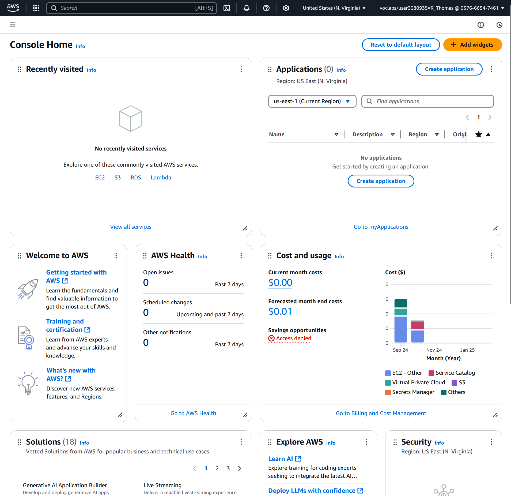
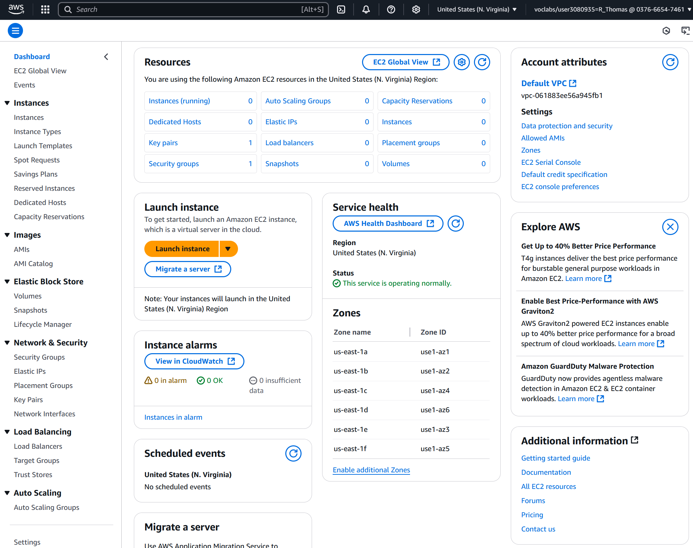
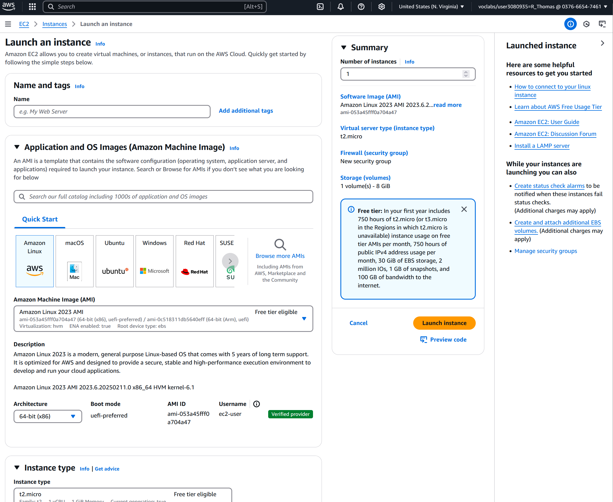

This week our goal is to get acquainted with AWS Academy. We use AWS Academy to learn how to deploy and
manage infrastructure with AWS. Additionally, AWS Academy will be used to develop the Cloud
assignment. If you have not already enrolled in the AWS Academy courses, you need to do so now.
Navigate the AWS Academy interface, if you have not done so already.
Enter the AWS Console from an AWS Academy lab.
Provision an EC2 instance that deploys a simple static website.
We will then start using an Infrastructure as Code tool, specifically, Terraform, to deploy the static website instead
of using the AWS Console. This week you will also learn how to:
Authenticate Terraform to use the AWS Learner Lab.
Configure a single server website in Terraform and deploy.
Create a Terraform module for deploying arbitrary single server websites.
2 AWS Academy
AWS Academy is an educational platform to teach you how to use AWS services. In this course, we will be using it
in two ways:
The AWS Cloud Foundations, Cloud Architecting, and Cloud Developing courses are supplementary
material to help cement your ability to use AWS. You are encouraged to work your way through at
least the AWS Cloud Foundations and Cloud Architecting courses.
The AWS Learner Lab provides access to an environment which will be used in these practicals to
learn AWS. A separate Learn Lab will be used to develop your Cloud Infrastructure assignment.
3 Enrol in AWS Academy
Set up your AWS Academy account by responding to your email invitation and clicking Get Started.
The email invitation will come from AWS Academy. Check your junk/spam folders.
Use the email address that received the email invitation.
4 Exploring the Interface
Aside
We will just be looking at the Learner Lab today, please ask on the Ed Discussion board if you need
help using the supplementary AWS Academy courses.
Enter the Learner Lab via the following steps.
Once you have enrolled in the course, you should see the course page.
Navigate to the Modules tab and select the link for “Launch AWS Academy Learner Lab”. You will
need to accept the AWS Learner Lab terms and conditions to be able to launch learner lab. You may
also open and browse the “AWS Academy Learner Lab Student Guide” and “Learn how to effectively
use the AWS Academy Learner Lab” links, which cover some of the content of this practical.
You should now see the Learner Lab interface.
The AWS text, near the top left of the window, with the (currently) red circle is the link to open
the AWS console.
You can also see your budget. Note that the budget is not updated in real-time, so avoid creating
multiple resources at once.
The 00:00 is a countdown of hours remaining for your lab. A lab can only remain active for 4
hours, after which it will close, unless you press start lab again before the 4 hours expires. Once
the lab is started, 00:00 will change to 04:00.
AWS details will become important later but are not needed now.
The README button will re-open the text panel currently on the right of the terminal interface.
The README text has a lot of important information including what AWS services are available
in the learner labs environment, please read it.
The terminal interface is an environment with the SSH keys required to connect to AWS
instances semi-automatically (we will use this today).
Notice
If you get an error message saying “labs.vocareum.com refused to connect.”, ensure that your
browser is not in the incognito mode. If you still encounter this error, try using a different
browser.
Go ahead and start the lab. It will take a few moments to get ready. The red circle will turn yellow as the lab is
starting, and green once it has started. Click on the AWS text with the green circle when it is available. This
will open the AWS Console in a new browser tab. (You may need to enable pop-ups from
awsacademy.) If you end up working for a company which uses AWS, welcome to your new
home.

Aside
Amazon Web Services (AWS) is an Infrastructure as a Service (IaaS) and Software as a Service
(SaaS) provider. They offer a collection of services which are helpful for development. For example,
they offer virtual compute resources, database storage options, and networking to tie it all together.
Services are offered on a pay as you go model, meaning you only pay for the seconds you use a
service. We will now get acquainted with some simple services offered by AWS.
5 AWS EC2
Today we are going to focus on using AWS’s EC2 service. Elastic Compute Cloud (EC2) is the primary compute
service offered by AWS. It allows you to create virtual machines on Amazon’s infrastructure. You have full control
over this machine and can configure it for whatever purpose you need.
Navigate to the search bar in the top left and find the EC2 service. You might find this interface overwhelming.
It is important to note that since EC2 is one of the primary services offered by AWS, many smaller services we do
not need are bundled into this service.
Today, we only need the Instances dashboard. Navigate to there and select “Launch instance”.

5.1 EC2 AMI
First we will need to select an Amazon Machine Image (AMI). An AMI is the template (cookie cutter) which
provides instructions on how an instance should be provisioned. Amazon offers a range of built-in AMIs. There are
also community AMIs or you can create your own. As we just want a simple server today, we will use one of the
built-in AMIs.
We will use the Amazon Linux 2023 AMI today, it is considered one of the fundamental images.
Every AMI has a unique AMI code, which is ami-053a45fff0a704a47 for the Amazon Linux 2023
AMI.

5.2 Instance Settings
The settings to configure your instance are:
Add a ‘Name’ tag. Call it the name of your website, e.g. hextris.
Select an appropriate AMI, i.e. Amazon Linux 2023 AMI, ami-053a45fff0a704a47.
Select a 64-bit (x86) architecture.
The instance type defines the computing, memory, networking and storage capabilities of your
instance. We do not need a large server, choose t2.micro.
Select the existing vockey (Type: RSA) key pair option.
In network settings, choose ‘Create security group’ and select to allow SSH traffic from anywhere,
and HTTPS and HTTP access from the internet.
Keep the ‘Configure storage’ settings as default.
Do not worry about the ‘Advanced details’ options for now.
You can now launch the instance to start your server.
6 Accessing the Instance
Return to the Instances dashboard. You should see that a new instance has been created, its instance state might
not yet be Running, if not, wait.
Note the public IPv4 address as we will need to use this to connect to the server.
Return to the AWS Learner Lab interface.
Run the following, replacing 127.0.0.1 with the public IP address of your instance. This command
uses the vockey | RSA key pair to gain SSH access to the machine.
$ssh-i~/.ssh/labsuser.pemec2-user@127.0.0.1
For example:
7 Installing Hextris
Hextris [1] is very simple to install. Using an EC2 interface is perhaps overkill for it. It is an entirely client-side/static
web application which means we just have to serve the static files.
First, we will need to enable serving of static files. We can install and start the httpd service for this. The AMI
we have picked uses the yum package manager, so to install httpd we run:
All files in the /var/www/html directory will now be served when accessed via HTTP. Navigate
to the public IP address of your EC2 instance in the browser. You should see an “It works!” landing
page.
Change to the /var/www/html directory and notice that it is currently empty. We need to download the static
files to this directory so that they can be served. We can use git for this (though it is not the most suited tool), but
first git needs to be installed on the instance.
$sudoyuminstallgit
Finally, confirm that we are in the /var/www/html directory.
$cd/var/www/html
And clone the repository into that directory.
$sudogitclonehttps://github.com/Hextris/hextris.
Now if you navigate to the http address of the public IP address (e.g. http://18.208.165.253), you should
be able to see your newly deployed website. Congratulations!
Notice
If you are having timeout issues, one problem could be using https to connect rather than http.
8 Switching to Terraform
For the remainder of the practical we will be using Terraform to provision the same instance we just
created.
First, please delete any running instances in your AWS account using the AWS Console.
Next, navigate to the GitHub Classroom link for this practical provided by your tutor. This will create
a new repository where we can work on Terraform.
9 Using Terraform in AWS Learner Labs
We will redeploy our Hextris application using Infrastructure as Code (IaC) to do so. You will need to keep your lab
running for the next steps. (Now is a good time to click start to refresh your 4 hours.)
Click on ‘AWS Details’ to display information about the lab.
Click on the first ‘Show’ button next to ‘AWS CLI’ which will display a text block starting with
[default].
Within your repository create a credentials file and copy the contents of the text block into the
file. Do not share this file contents — do not commit it. This file is added to the .gitignore of your
repository by default.
Create a main.tf file in the same directory with the following contents:
The terraform block specifies the required external dependencies, here we need to use the AWS provider
above version 5.0. The provider block configures the AWS provider, instructing it which region to use and
how to authenticate (using the credentials file we created). We also include some tags to add
to any resource made by this provider, these are useful for keeping track of resources in the
console.
We need to initialise Terraform which will download the required dependencies. This is done with the
terraform init command.
$terraforminit
This command will create a .terraform directory which stores providers and a provider lock file,
.terraform.lock.hcl.
To verify that we have setup Terraform correctly, use terraform plan.
$terraformplan
As we currently have no resources configured, it should find that no changes are required. Note that this
does not ensure our credentials are correctly configured, as Terraform has no reason to try authenticating
yet.
10 Deploying Hextris
First, we will need to create an EC2 instance resource. The AWS provider calls this resource an
aws_instance1.
Get familiar with the documentation page. Most Terraform providers have reasonable documentation. Reading
the argument reference section helps to understand what a resource is capable of.
We will start off with the basic information for the resource. Configure it to use a specific Amazon Machine
Instance (AMI) and chose the t2.micro size. We will also give it a name so that it is easy to find. Add the following
basic resource to main.tf:
You can now check in the AWS Console that another EC2 instance with the name hextris has been
created. Now that we have a server, we should try to configure it to serve Hextris. We will use the
user_data field which configures commands to run when launching the instance. First we need a
script to provision the server, if we combine all our commands from section 7, we will produce this
script:
Now we can add the following field to our Terraform resource. It uses the Terraform file function to load the
contents of a file named serve-hextris.sh relative to the Terraform directory. The contents of that file is passed
to the user_data field.
user_data=file("./serve-hextris.sh")
If you run the terraform plan command now, you will notice that Terraform has identified that this change
will require creating a new EC2 instance. Where possible, Terraform will try to update a resource in-place
but since this changes how an instance is started, it needs to be replaced. Go ahead and apply the
changes.
Now, in theory, we should have deployed Hextris to an EC2 instance. But how do we access that instance? We
could go to the AWS Console and find the public IP address. However, it turns out that Terraform already knows
the public IP address. In fact, if you open the Terraform state file (terraform.tfstate), you should be able to find
it hidden away in there. But we do not want to go hunting through this file all the time. Instead we will use the
output keyword.
We can specify certain attributes as ‘output’ attributes. Output attributes are printed to the terminal when the
module is invoked directly but as we will see later, they can also be used by other Terraform configuration
files.
This creates a new output attribute, hextris-url, which references the public_ip attribute of our
hextris-server resource. Note that resources in Terraform are addressed by the resource type (aws_instance)
followed by the name of the resource (hextris-server).
If you plan or apply the changes, it should tell you the public IP address of the instance resource.
You can apply this plan to save these new output values to the Terraform state, without changing any real
infrastructure.
So let’s try and access that URL, hmm. That is strange. Something has gone wrong.
11 Security Groups
When we setup our EC2 instance using the AWS Console, it helpfully created a new security group for us. We
specified that this security group should allow SSH, HTTP, and HTTPS traffic by allowing traffic from ports 22, 80,
and 443 respectively. When configuring with Terraform, security groups and their attachment to EC2 instances are
separate resources. Refer back to the Terraform documentation for details or, as is normally quicker, Google
“terraform aws security group”.
First, let us create an appropriate security group. Recall that in the AWS Console configuration, ingress SSH access (port
22) and all egress2
traffic was automatically configured and we just added ingress port 80. In Terraform the whole state must be
configured so we specify two ingress blocks one for HTTP (port 80) and one for SSH access (port
22).3
Additionally, we will create egress for all outgoing traffic.
Note that EC2 instances can have multiple security groups. Once again notice the structure of resource
identifiers in AWS.
Now apply the changes. If you now try to access via the IP address (the IP address may have changed), you
should be able to view the hextris website.
12 Tearing Down
One of the important features of Infrastructure as Code (IaC) is all the configuration we just did is stored in a file.
This file can, and should be, version controlled and subject to the same quality rules of code files. It
also means that if we want to redeploy Hextris at any point, we can easily just run the IaC to deploy
it.
To try this out, let us first take everything down. We can do this with:
$terraformdestroy
You should be prompted to confirm that you want to destroy all of the resources in the state. Once Terraform
has finished taking everything down, confirm that you can no longer access the website and that the AWS console
says the instances have been destroyed.
Now go ahead and apply the changes to bring everything back:
$terraformapply
Confirm that this brings the website back exactly as before (with a different IP address). You can now start any
lab you want and almost instantly spin back up the website you have configured. That is the beauty of
Infrastructure as Code!
Hint: Destroy everything again before you finish.
13 Automated Testing
A quick note about automated testing. As with all the practicals thus far, this practical has automated tests enabled
on your repository.
From within your repository, you can run the tests locally with:
$.csse6400/bin/unittest.sh
While the emails saying that the tests failed can be annoying, these automated tests allow us to ensure that
everyone is keeping up with the practical content.
If fixing the test failures is not too hard, please try to do so. If you are repeatedly not passing the practicals, we
may reach out to ensure that you are not being left behind in the content.
14 Extension
Info
This section is for students who have completed the practical and want to extend their knowledge.
Since CSSE6400 runs this practical every year, sometimes the AMI that we were using is out of date or does not
exist any more. For this practical, we could instead query AWS for the latest AMI and use that in our
Terraform.
To do this we introduce a new data source, aws_ami. Data sources fetch or query data from the provider, rather
than creating something.
And now, if we run terraform plan, we will see that it wants to destroy and recreate the EC2 instance. This is
because the AMI has changed since this practical was first updated for this year.
AWS Regions
Regions are the physical locations of AWS data centres. When applying Terraform, the changes are being
made to one region at a time. In our case we specified the region us-east-1. Often you do not need to
deploy to more than one region, however, it can help decrease latency and reduce risk from a major
disaster. Generally, pick a region and stick with it, we have picked us-east-1 because it is the least
expensive.
Availability Zones
An AWS Region will consist of availability zones, normally named with letters. For example, the AWS Region
located in Sydney, ap-southeast-2 has three availability zones: ap-southeast-2a, ap-southeast-2b, and
ap-southeast-2c. An availability zone is a collection of resources which run on separate power
supplies and networks. Essentially minimising the risk that multiple availability zones would fail at
once.
VPC
Virtual Private Clouds, or VPCs, are virtual networks under your control, if you have managed a regular network
before it should be familiar. VPCs are contained within one region but are spread across multiple availability
zones.
2Ingress and egress in networking just means incoming and outgoing respectively.
3We do not actually need SSH access as all the server configuration is done when the machine is provisioned thanksto the user_data, but we are trying to create a new instance that is identical to the original AWS Console in section7.